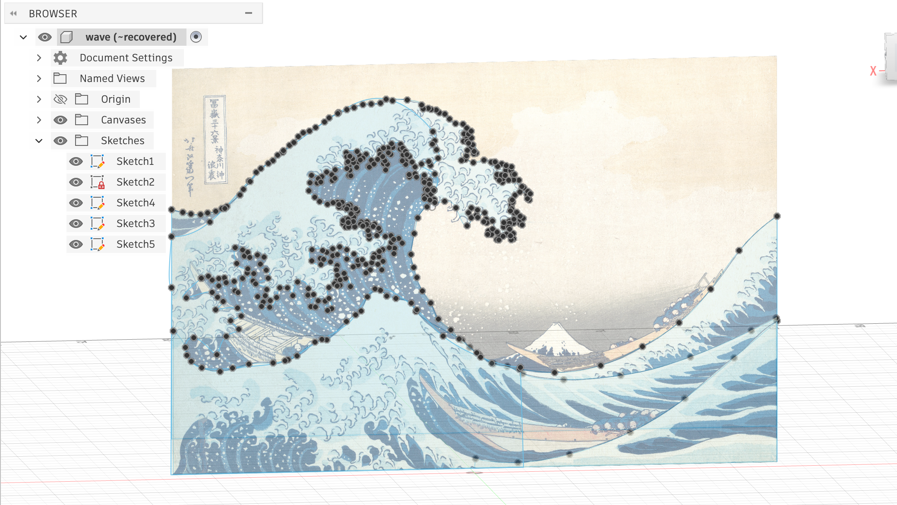
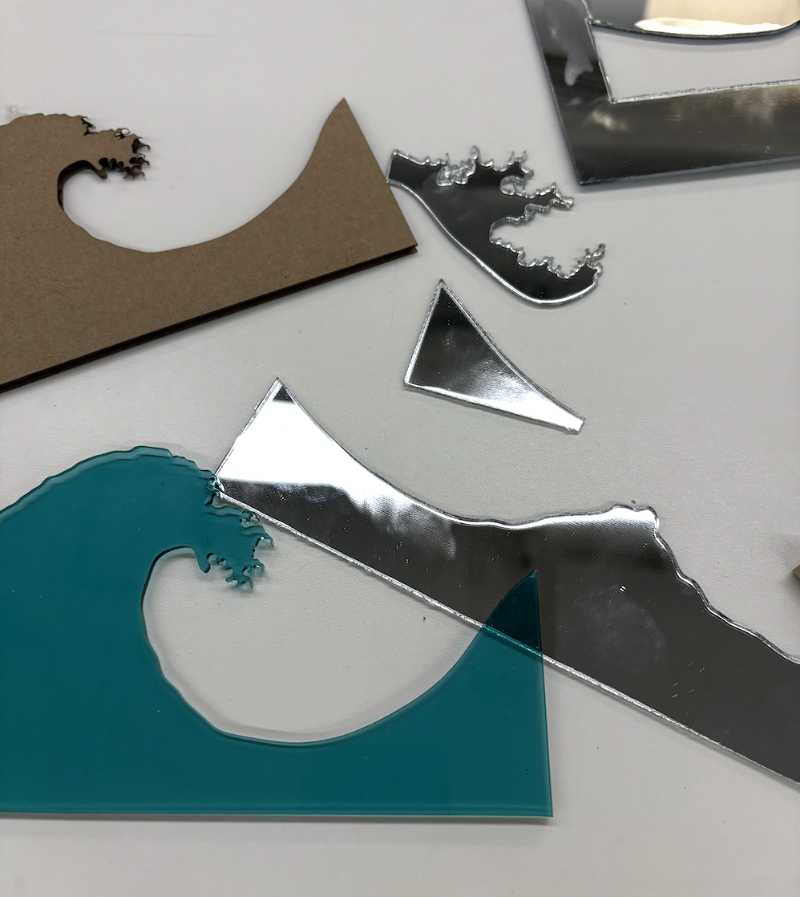
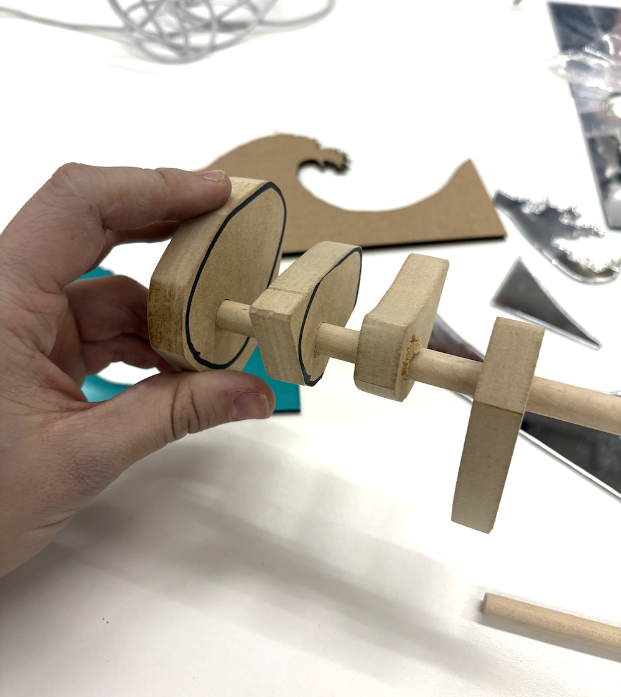
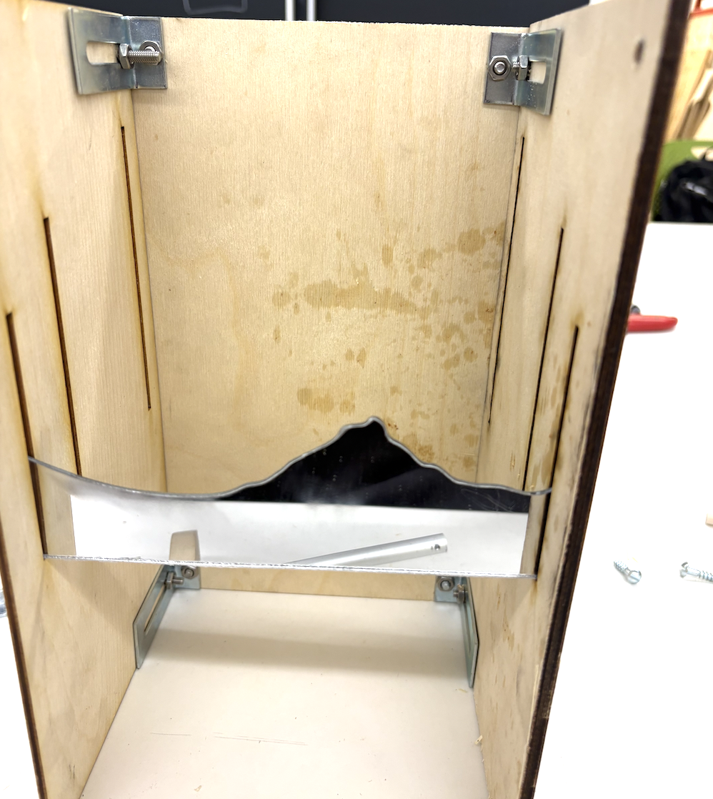
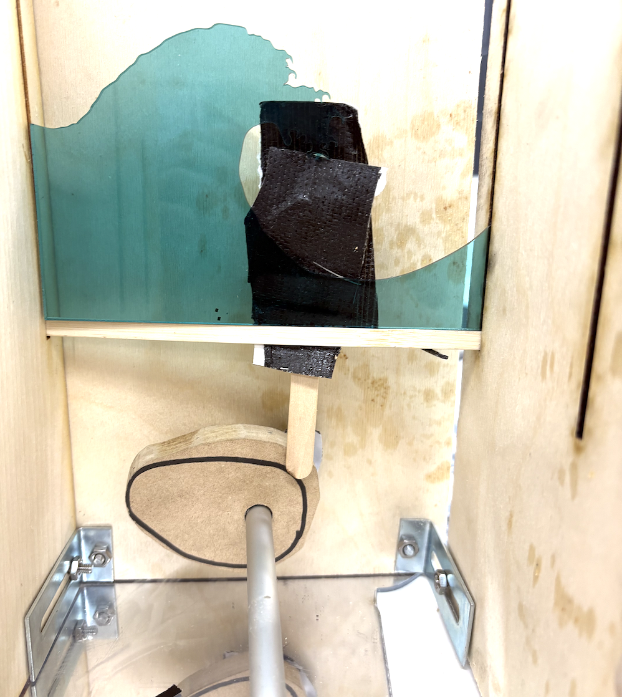
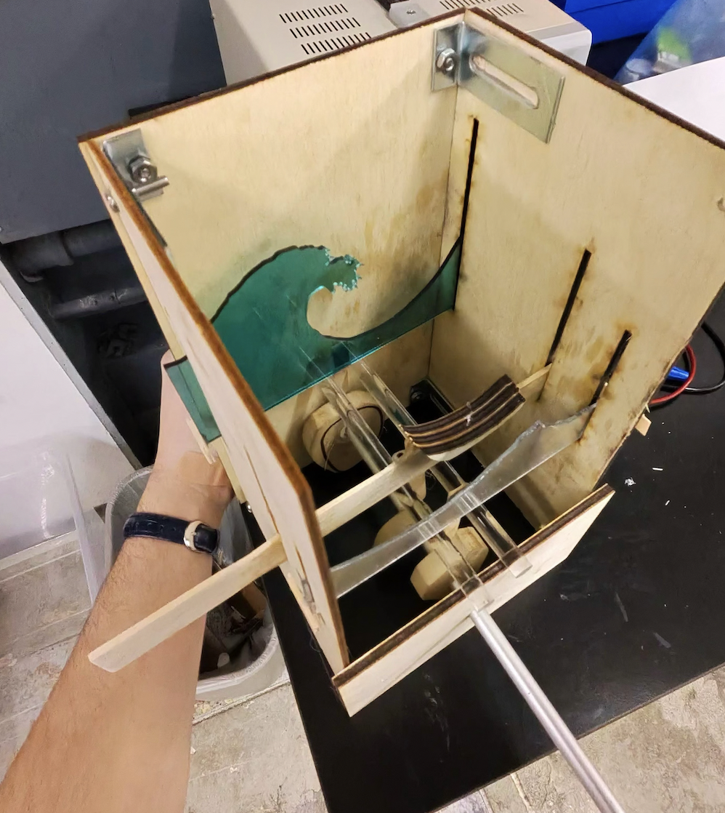

<div class="textcontainer">
<h3>Week 3: Fabrication</h3>
<p class="margin"> </p>
Add your content here using markdown syntax.
<p class="margin"> </p>
For this week's assignment, I have made Hokusai's The Great Wave of Kanagawa!
I started off by designing the wave itself in Fusion, and I printed it on Acrylic a few times... (hint, it burned a lot and the claws were initially too small so the kerf ate them up)
I used the Splite stuff A LOT.
<p></p>
I first prototyped with Cardboard, then moved to acrylic. Also, a lot of the stuff snapped when I tried to pop it out (it was so hot I think that it fused back together after I had cut it?)
<p></p>
Anyways, after this, I moved on to the camshaft. I knew I wanted to make the waves rock up and down, so I thought with a single motor the best way is a camshaft.
I cut the cams out of some thicker wood and sanded them for like an hour or so...
I then drilled holes through all of them the diameter of a wooden stick I had found in the lab! Which later got changed to an aluminum one once I realized the stick was like 3mm too short.
<p></p>
I then had to cut a body for this work. I laser cutted the all sides, and this went through SO many iterations. First iteration had a big problem: the holes for the waves were just big enough to fit them, but too tight so friction was horrible.
Then I made the holes bigger only to realize I had not left enough space for one of the cams.
Then I realized I had made the back too wide so the waves would fall through with any bigger motion of the cams.
I had envisioned a design where you can slide off the sides to replace the waves, so I used some hinges I found in the lab that allowed for that and screwed them in.
<p></p>
Anway, after I mounted everything together, I realized that my wave was jumping out of the enclosure to one side, because the ice cream sticks had no support on either side. So more drilling and more adding of supports.
(this was non working)
<p></p>
This was working! I had to hold the motor because the torque was too much for the support I had made hanging from the 2 side supports.
<video controls autoplay loop muted style="width: 100%;">
<source src="video.mov" type="video/mp4">
</video>
<p></p>